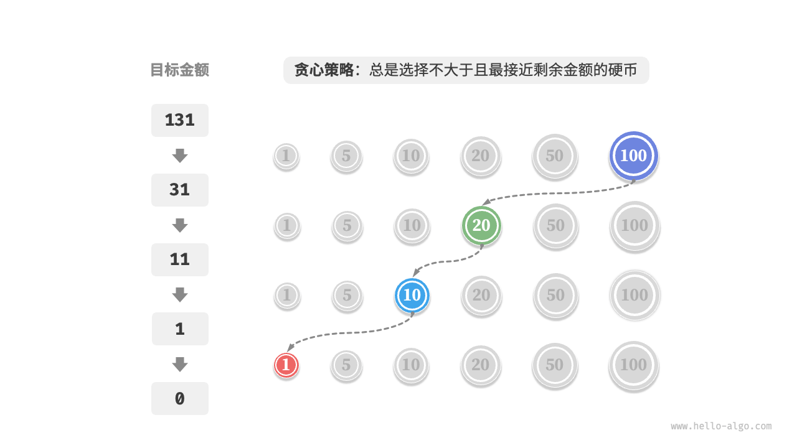
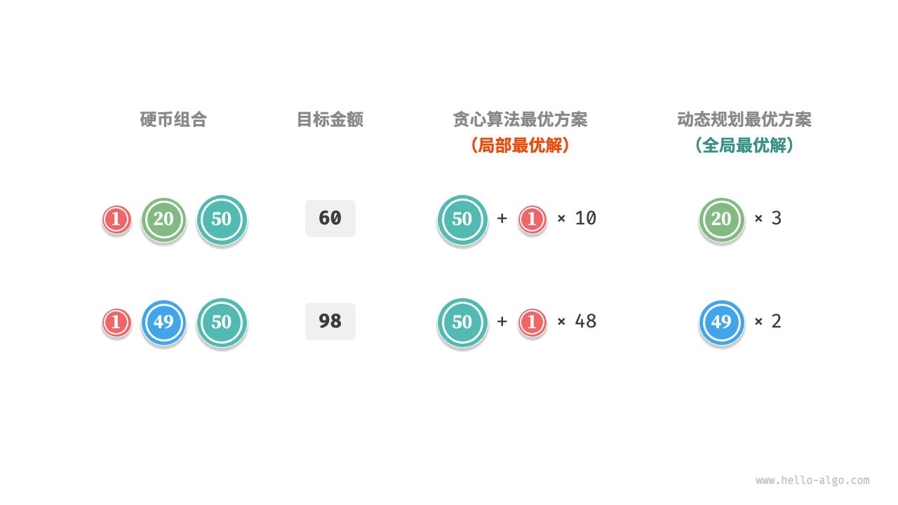

贪心算法
「贪心算法 greedy algorithm」是一种常见的解决优化问题的算法，其基本思想是在问题的每个决策阶段，都选择当前看起来最优的选择，即贪心地做出局部最优的决策，以期获得全局最优解。贪心算法简洁且高效，在许多实际问题中有着广泛的应用。
贪心算法和动态规划都常用于解决优化问题。它们之间存在一些相似之处，比如都依赖最优子结构性质，但工作原理不同。
- 动态规划会根据之前阶段的所有决策来考虑当前决策，并使用过去子问题的解来构建当前子问题的解。
- 贪心算法不会考虑过去的决策，而是一路向前地进行贪心选择，不断缩小问题范围，直至问题被解决。
我们先通过例题“零钱兑换”了解贪心算法的工作原理。这道题已经在“完全背包问题”章节中介绍过，相信你对它并不陌生。
!!! question
给定 $n$ 种硬币，第 $i$ 种硬币的面值为 $coins[i - 1]$ ，目标金额为 $amt$ ，每种硬币可以重复选取，问能够凑出目标金额的最少硬币数量。如果无法凑出目标金额，则返回 $-1$ 。
本题采取的贪心策略如下图所示。给定目标金额，我们贪心地选择不大于且最接近它的硬币，不断循环该步骤，直至凑出目标金额为止。

实现代码如下所示：
"Python"
def coin_change_greedy(coins: list[int], amt: int) -> int: """零钱兑换：贪心""" // 假设 coins 列表有序 i = len(coins) - 1 count = 0 // 循环进行贪心选择，直到无剩余金额 while amt > 0: // 找到小于且最接近剩余金额的硬币 while i > 0 and coins[i] > amt: i -= 1 // 选择 coins[i] amt -= coins[i] count += 1 // 若未找到可行方案，则返回 -1 return count if amt == 0 else -1"C++"
/* 零钱兑换：贪心 */ int coinChangeGreedy(vector<int> &coins, int amt) { // 假设 coins 列表有序 int i = coins.size() - 1; int count = 0; // 循环进行贪心选择，直到无剩余金额 while (amt > 0) { // 找到小于且最接近剩余金额的硬币 while (i > 0 && coins[i] > amt) { i--; } // 选择 coins[i] amt -= coins[i]; count++; } // 若未找到可行方案，则返回 -1 return amt == 0 ? count : -1; }"Java"
/* 零钱兑换：贪心 */ int coinChangeGreedy(int[] coins, int amt) { // 假设 coins 列表有序 int i = coins.length - 1; int count = 0; // 循环进行贪心选择，直到无剩余金额 while (amt > 0) { // 找到小于且最接近剩余金额的硬币 while (i > 0 && coins[i] > amt) { i--; } // 选择 coins[i] amt -= coins[i]; count++; } // 若未找到可行方案，则返回 -1 return amt == 0 ? count : -1; }
你可能会不由地发出感叹：So clean ！贪心算法仅用约十行代码就解决了零钱兑换问题。
贪心算法的优点与局限性
贪心算法不仅操作直接、实现简单，而且通常效率也很高。在以上代码中，记硬币最小面值为 $\min(coins)$ ，则贪心选择最多循环 $amt / \min(coins)$ 次，时间复杂度为 $O(amt / \min(coins))$ 。这比动态规划解法的时间复杂度 $O(n \times amt)$ 降低了一个数量级。
然而，对于某些硬币面值组合，贪心算法并不能找到最优解。下图给出了两个示例。
- 正例 $coins = [1, 5, 10, 20, 50, 100]$：在该硬币组合下，给定任意 $amt$ ，贪心算法都可以找到最优解。
- 反例 $coins = [1, 20, 50]$：假设 $amt = 60$ ，贪心算法只能找到 $50 + 1 \times 10$ 的兑换组合，共计 $11$ 枚硬币，但动态规划可以找到最优解 $20 + 20 + 20$ ，仅需 $3$ 枚硬币。
- 反例 $coins = [1, 49, 50]$：假设 $amt = 98$ ，贪心算法只能找到 $50 + 1 \times 48$ 的兑换组合，共计 $49$ 枚硬币，但动态规划可以找到最优解 $49 + 49$ ，仅需 $2$ 枚硬币。

也就是说，对于零钱兑换问题，贪心算法无法保证找到全局最优解，并且有可能找到非常差的解。它更适合用动态规划解决。
一般情况下，贪心算法的适用情况分以下两种。
- 可以保证找到最优解：贪心算法在这种情况下往往是最优选择，因为它往往比回溯、动态规划更高效。
- 可以找到近似最优解：贪心算法在这种情况下也是可用的。对于很多复杂问题来说，寻找全局最优解非常困难，能以较高效率找到次优解也是非常不错的。
贪心算法特性
那么问题来了，什么样的问题适合用贪心算法求解呢？或者说，贪心算法在什么情况下可以保证找到最优解？
相较于动态规划，贪心算法的使用条件更加苛刻，其主要关注问题的两个性质。
- 贪心选择性质：只有当局部最优选择始终可以导致全局最优解时，贪心算法才能保证得到最优解。
- 最优子结构：原问题的最优解包含子问题的最优解。
最优子结构已经在“动态规划”章节中介绍过，这里不再赘述。值得注意的是，一些问题的最优子结构并不明显，但仍然可使用贪心算法解决。
我们主要探究贪心选择性质的判断方法。虽然它的描述看上去比较简单，但实际上对于许多问题，证明贪心选择性质并非易事。
例如零钱兑换问题，我们虽然能够容易地举出反例，对贪心选择性质进行证伪，但证实的难度较大。如果问：满足什么条件的硬币组合可以使用贪心算法求解？我们往往只能凭借直觉或举例子来给出一个模棱两可的答案，而难以给出严谨的数学证明。
!!! quote
有一篇论文给出了一个 $O(n^3)$ 时间复杂度的算法，用于判断一个硬币组合能否使用贪心算法找出任意金额的最优解。
Pearson, D. A polynomial-time algorithm for the change-making problem[J]. Operations Research Letters, 2005, 33(3): 231-234.
贪心算法解题步骤
贪心问题的解决流程大体可分为以下三步。
- 问题分析：梳理与理解问题特性，包括状态定义、优化目标和约束条件等。这一步在回溯和动态规划中都有涉及。
- 确定贪心策略：确定如何在每一步中做出贪心选择。这个策略能够在每一步减小问题的规模，并最终解决整个问题。
- 正确性证明：通常需要证明问题具有贪心选择性质和最优子结构。这个步骤可能需要用到数学证明，例如归纳法或反证法等。
确定贪心策略是求解问题的核心步骤，但实施起来可能并不容易，主要有以下原因。
- 不同问题的贪心策略的差异较大。对于许多问题来说，贪心策略比较浅显，我们通过一些大概的思考与尝试就能得出。而对于一些复杂问题，贪心策略可能非常隐蔽，这种情况就非常考验个人的解题经验与算法能力了。
- 某些贪心策略具有较强的迷惑性。当我们满怀信心设计好贪心策略，写出解题代码并提交运行，很可能发现部分测试样例无法通过。这是因为设计的贪心策略只是“部分正确”的，上文介绍的零钱兑换就是一个典型案例。
为了保证正确性，我们应该对贪心策略进行严谨的数学证明，通常需要用到反证法或数学归纳法。
然而，正确性证明也很可能不是一件易事。如若没有头绪，我们通常会选择面向测试用例进行代码调试，一步步修改与验证贪心策略。
贪心算法典型例题
贪心算法常常应用在满足贪心选择性质和最优子结构的优化问题中，以下列举了一些典型的贪心算法问题。
- 硬币找零问题：在某些硬币组合下，贪心算法总是可以得到最优解。
- 区间调度问题：假设你有一些任务，每个任务在一段时间内进行，你的目标是完成尽可能多的任务。如果每次都选择结束时间最早的任务，那么贪心算法就可以得到最优解。
- 分数背包问题：给定一组物品和一个载重量，你的目标是选择一组物品，使得总重量不超过载重量，且总价值最大。如果每次都选择性价比最高（价值 / 重量）的物品，那么贪心算法在一些情况下可以得到最优解。
- 股票买卖问题：给定一组股票的历史价格，你可以进行多次买卖，但如果你已经持有股票，那么在卖出之前不能再买，目标是获取最大利润。
- 霍夫曼编码：霍夫曼编码是一种用于无损数据压缩的贪心算法。通过构建霍夫曼树，每次选择出现频率最低的两个节点合并，最后得到的霍夫曼树的带权路径长度（编码长度）最小。
- Dijkstra 算法：它是一种解决给定源顶点到其余各顶点的最短路径问题的贪心算法。